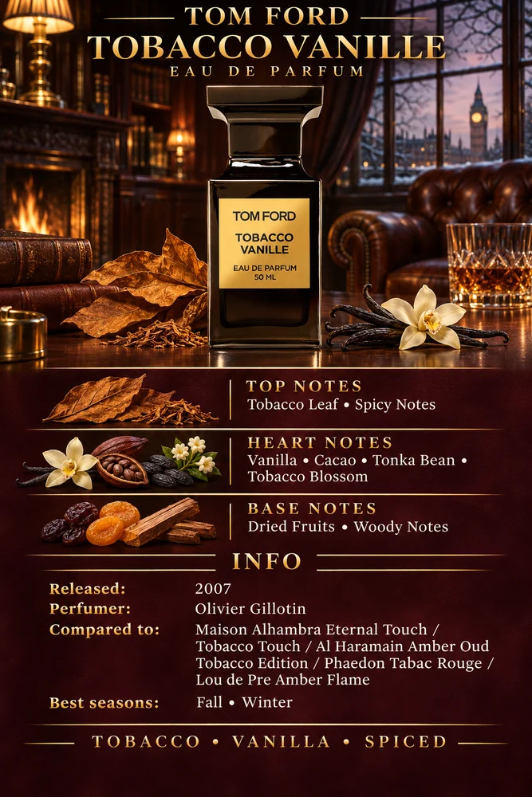
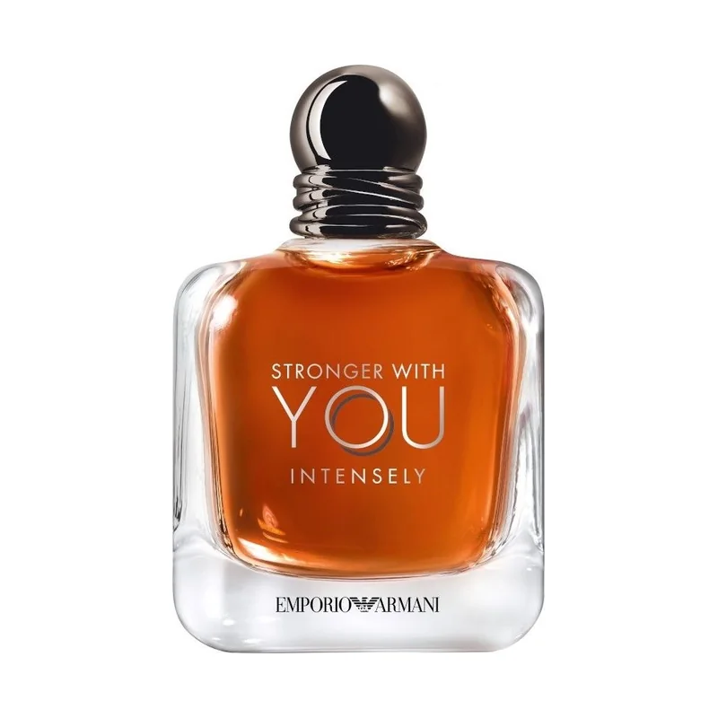
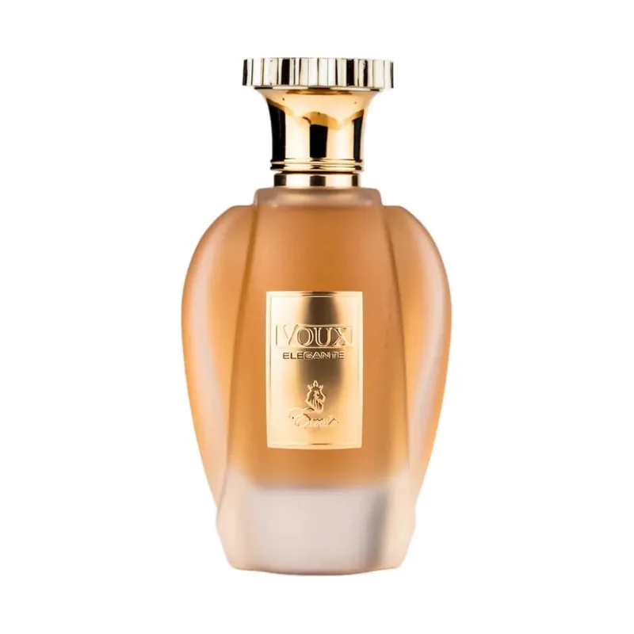

Tom Ford
Tobacco Vanille Eau de Parfum
β Beta Designer · Eau de Parfum · 2007 Future buy
Randy's rating—/10
Public rating8/10
Overall R—/25
Normalized N—
R and N are left blank until Randy has worn and rated it. How scores work
Notes
Top notes
- tobacco leaf
- spicy notes
Heart notes
- vanilla
- cacao
- tonka bean
- tobacco blossom
Base notes
- dried fruits
- woody notes
Details
| House | Tom Ford |
|---|---|
| Type | Designer · β Beta |
| Concentration | Eau de Parfum |
| Released | 2007 |
| Perfumer | Olivier Gillotin |
| Scent family | Sweet & Gourmand, Fruity, Woody |
| Best seasons | Fall, Winter |
| Similar to | Maison Alhambra Eternal Touch / Tobacco Touch Al Haramain Amber Oud Tobacco Edition Phaedon Tabac Rouge Lou de Pre Amber Flame |
Sources
Fragrantica 4.17/5 (about 8.3/10) from 32,528 votes; Parfumo 8.2/10 from 6,148 ratings. Average about 8.3, rounded to 8. Checked 2026-11-17.
Other Suggestions
-
 Parfums de MarlyAlthaïrRandy9Public 9N 0.900
Parfums de MarlyAlthaïrRandy9Public 9N 0.900 -

Emporio ArmaniStronger With You Intensely Eau de ParfumRandy9Public 9N 0.900 -
 Jean Paul GaultierLe Male Le ParfumRandy8.75Public 9N 0.887
Jean Paul GaultierLe Male Le ParfumRandy8.75Public 9N 0.887 -

Emir (Paris Corner)Voux Elegante Eau de ParfumRandy8.75Public 8N 0.839 -
 LattafaKhamrah Qahwa Eau de ParfumRandy8.5Public 8N 0.826
LattafaKhamrah Qahwa Eau de ParfumRandy8.5Public 8N 0.826